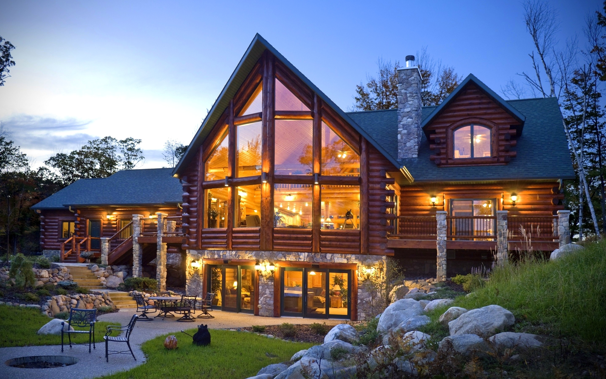

ITEC 3870 WEBPAGE PROJECT - BLOG
My Favorite Locations
GGC Library

While this isn't exactly my favorite place to be, I do spend a good deal of my time in the GGC library. It's (mostly) quiet, and free from the myriad distractions found in my room at home.
At Home

When I'm not out and about, I can usually be found at home. Specifically, this guy's home. Whether or not I'm welcome there is up for debate, as we've never met face-to-face. Anyhow, forget I said anything.
GVSU Kirkhof Center
Back in Michigan, the Kirkhof Center lower level was always a nice hangout. Half-decent food and a lack of sunlight made for a pretty solid coding den, so long as it wasn't near lunch time.